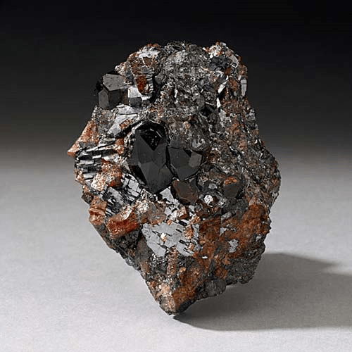

Monticellite - MgSiO4
Nesosilicates


Habit: Colorless to white to gray, greenish gray, greenish yellow or amber. Short, rounded prismatic crystals. Vitreous luster, or slightly resinous when massive; transparent to translucent. White streak.
Environment: Forms in skarns and marbles during hightemperature metasomatism or metamorphism; associated with apatite, calcite, diopside, dolomite, forsterite and similar minerals.
Etymology: Named for Teodoro Monticelli (1759-1845), an Italian mineralogist.